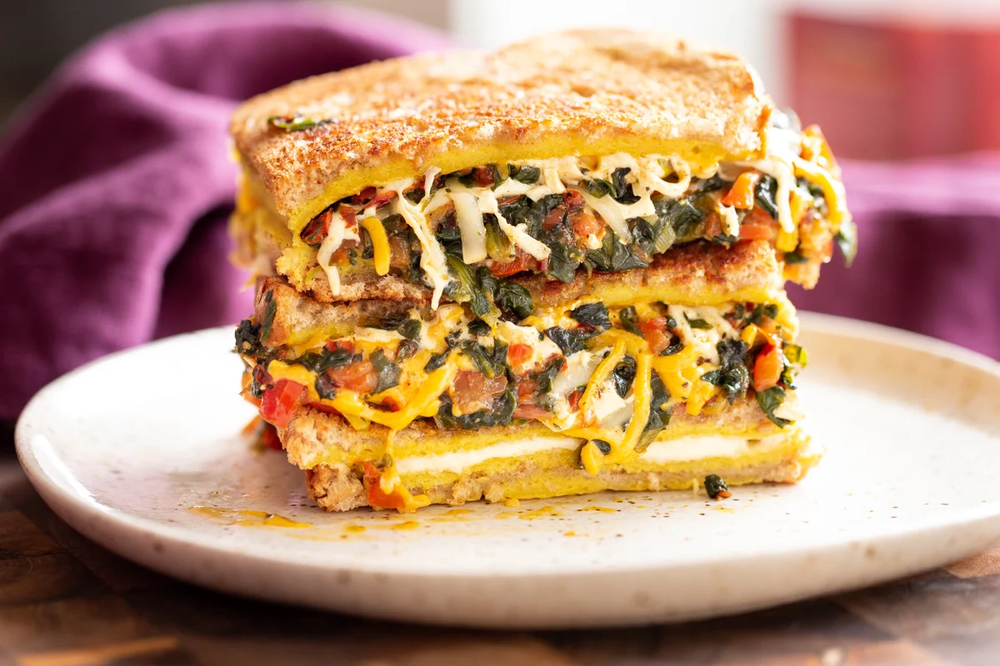

Lasagna

Description
Time to make a sandwitch using my favorite Indian staple ingredients – lentils. Moong Dal lentils aka skinned split mung beans or petite yellow lentils, to be precise. Soaked moong dal when blended makes a smooth batter that makes great thin omelets!
Reasons to love it more
- Easy to make and uses wholesome ingredients
- Soyfree and Nutfree
- Versatile. Use the moong dal batter to make thin or thick egg breakfast options
- You can also use the batter to make waffles! Add 1 tsp baking powder. Add veggies or the spinach filling and mix and make waffles
Ingredients
- Moong dal
- Black pepper
- Spinach
- Cheese
Steps
Read more here